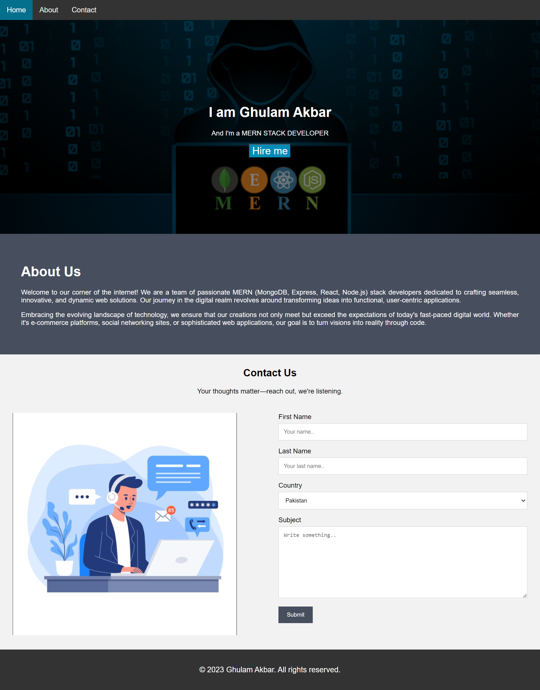
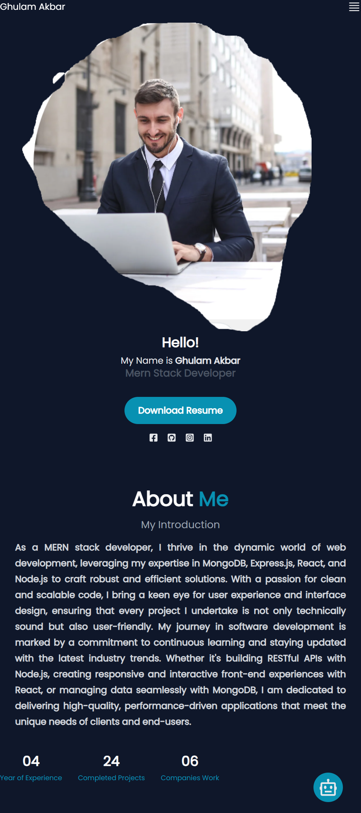

Web Developer | Creative Thinker
Hi there! I'm Ghulam Akbar, a passionate web developer with a diverse skill set and a keen eye for design. With a solid foundation in HTML5, CSS, and JavaScript, I bring creativity and functionality together to craft engaging and user-friendly websites. My journey in the tech world began 4 years ago, and I have spent the last 3 years honing my skills and gaining valuable experience in a dynamic software company. Working on a variety of projects has allowed me to refine my coding abilities and develop a deep understanding of web design principles. In addition to coding, I'm well-versed in Figma, a powerful design tool that I leverage to create visually stunning and cohesive user interfaces. I believe that a seamless blend of design and functionality is essential for delivering exceptional user experiences. Whether it's bringing a concept to life or solving complex coding challenges, I thrive on turning ideas into reality. I am dedicated to staying updated with the latest industry trends and technologies to ensure that my work is always at the forefront of web development. Let's build something amazing together!
As a web developer, I believe in showcasing my skills and work in a visually appealing and organized manner. The creation of my portfolio website was an exciting project that allowed me to express my creativity and technical proficiency.
Project 2 was dedicated to optimizing and enhancing the mobile responsiveness of a website. Recognizing the increasing use of mobile devices for web browsing, I undertook the challenge of ensuring a seamless and enjoyable experience for users on smartphones and tablets.
Email: jamaliakbar909@gmail.com
Phone: +923193083342